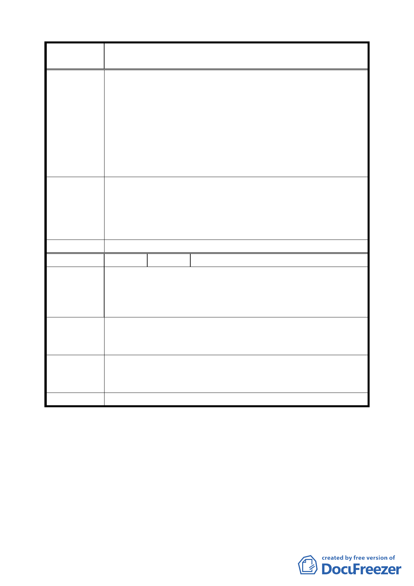

案 名 變更臺北市南港區南港路以南、縱貫鐵路以北南港輪胎工廠
及附近土地工業區為特定專用區主要計畫案
資協議書」之團體協約，並主動送交勞工局核可。
2.有關老煙囪及其他勞動文物保存，應提具「勞動文化調查暨
維護管理計畫書」，納入主要計畫書中。
說明：南港輪胎公司應比照「土地開發勞工權益保護自治
條例」之第六條規定，提具「勞動文化調查暨維護管理計
畫書」，內容包括：(1)基地調查、(2)勞動文物資產清冊，
(含各項呈現勞動歷史文化之構造物、機械（具）設備、生
產流程等資料)。(3)維護管理計畫。
1.有關勞工問題處理請提案單位補充說明。
專案小組審
查結論
2.有關老煙囪及其他勞動文物保存已於說明書加註「其煙囪
基座移置計畫與動態保留措施，應經臺北市政府文化主管
機關同意後使得為之」。另有關其他勞動文化保存建議以輪
胎紀念館（或同類型設施）方式進行。
委員會決議 同專案小組審查結論。
編 號 ３ 陳情人 闕壯志
建議位置：南港路二段 112 號
陳情理由
南港輪胎設廠座落南港區也有五十年以上，南港路二段 112
號等老厝，也有七八十年歷史，當初設廠時也向祖父收購土
地，故此主要計畫案，也應一併來處理，列入主要計畫案內。
應包括現有南港路二段道路○三九三地號及○四五○之一地
建 議 辦 法 號列入主要計畫案內。辦法再由細部規劃中再議或再辦公聽
會。
專案小組審
查結論
有關陳情人持有土地，經本計畫案樁位公告後，如屬道路用
地將由市府以公共設施方式處理，如屬特定專用區範圍內，
將納入計畫內以重劃方式處理。
委員會決議 同專案小組審查結論。
討論事項三
案名：擬定臺北市南港區南港路以南、縱貫鐵路以北特定專用區
（原南港輪胎工廠）細部計畫案
說明：
一、本案係市府九十三年七月八日以府都規字第 09413534000
號函送到會，並自九十四年七月十一日起公開展覽三十天。
二、法令依據：都市計畫法第 22 條及第 24 條、都市更新條例
二一